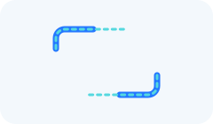
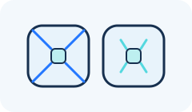
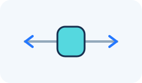
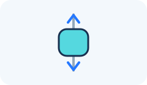
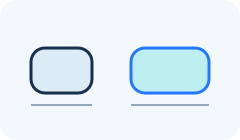
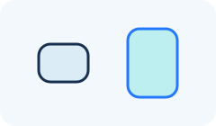
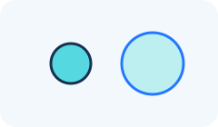

Android page: Settings > Touchpad
Touchpad
These settings affect the floating pad itself. They do not change where the cursor acts on the phone.
General
Disable touchpad
Hide the floating pad until it is enabled again.
Touchpad Frame Settings
The frame is the outside border of the pad.
Frame color
Choose the color of the touchpad border.
Fill color
Choose the color inside the touchpad.
Frame type
Choose a complete border or corner marks.
Solid
Draw a complete border around the touchpad.
Corners
Draw marks at the four corners of the touchpad.
Corner Length
Set the length of each corner mark when using the Corners frame type.

Corner radius
Make the touchpad corners sharper or rounder.
Frame width
Make the outside border thinner or thicker.
Region boundaries
These lines divide the top, bottom, left, and right areas from the center.
Enable region boundaries
Show or hide the dividing lines.
Region boundary color
Choose the color of the dividing lines.
Region boundary width
Make the dividing lines thinner or thicker.
Region boundary offset
Move the dividing lines farther from or closer to the corners.

Position and size
Touchpad X
Move the pad horizontally. The automatic value starts it in the usual position.

Touchpad Y
Move the pad vertically. The automatic value starts it in the usual position.

Touchpad width
Make the pad wider or narrower, in pixels.

Touchpad height
Make the pad taller or shorter, in pixels.

Touchpad transparency
Make the pad more see-through or more solid.
Button Frame Settings
The center button is configured here; its actions are configured on the Actions page.
Enable center button
Show or hide the button in the middle of the pad.
Button Frame color
Choose the color of the center button border.
Button Fill color
Choose the color inside the center button.
Button Frame type
Choose a complete border or corner marks.
Solid
Draw a complete border around the center button.
Corners
Draw marks at the four corners of the center button.
Button Corner Length
Set the length of each corner mark.
Button Corner radius
Make the button corners sharper or rounder.
Button Frame width
Make the button border thinner or thicker.
Button Size
Make the center button larger or smaller.
